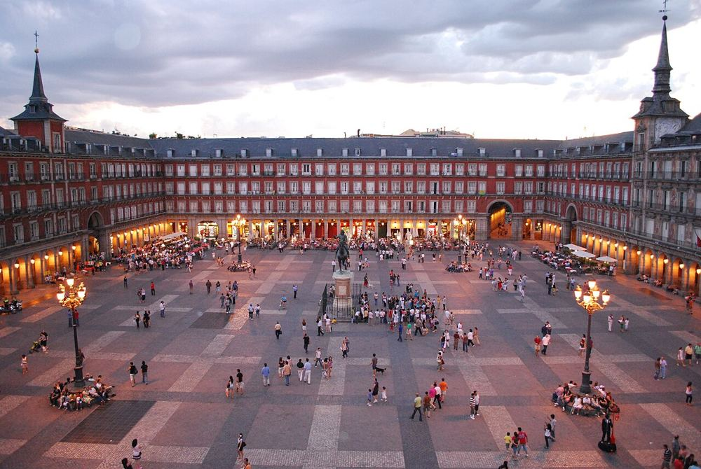

Plaza Mayor et Puerta del Sol
La grande place à arcades, puis la Puerta del Sol à 5 min : cherchez la statue de l'ours et la plaque du kilomètre zéro au sol.


Ce que les enfants vont aimer
Trouve l'ours de Madrid et le kilomètre zéro.
Autour du lieu
Toilettes, tables à langer, aires de jeux, eau potable, pharmacie et station les plus proches, avec le temps de marche.
Aucun service recensé à proximité dans OpenStreetMap.
À combiner dans la journée
Chocolatería San Ginés
Des churros à tremper dans un chocolat tout épais.
À 4 min à pied (160 m) · 2–14 ans
Palais royal
Des armures de chevaliers et des salles couvertes d'or.
À 17 min à pied (650 m) · 6–14 ans
Madrid Río
De grandes aires de jeux le long de la rivière.
À 30 min à pied (1,2 km) · 0–14 ans
S'il pleut : le plan B couvert
Questions fréquentes
Plaza Mayor et Puerta del Sol : à partir de quel âge ?
Nous le conseillons de 0 à 14 ans. Trouve l'ours de Madrid et le kilomètre zéro.
Plaza Mayor et Puerta del Sol : combien de temps prévoir ?
Environ 45 min sur place, sans compter le trajet.
Plaza Mayor et Puerta del Sol : peut-on y aller avec une poussette ?
Facile en poussette.
Plaza Mayor et Puerta del Sol : comment y aller ?
Plaza Mayor, 28012 Madrid. Métro Sol (lignes 1, 2 et 3).
Plaza Mayor et Puerta del Sol : l'entrée est-elle gratuite ?
Oui, l'accès est libre.
Fiche vérifiée le 30 octobre 2026. Horaires, tarifs et conditions d'accès changent souvent : vérifiez toujours sur le site officiel avant de partir. Tous les lieux de Madrid avec des enfants.